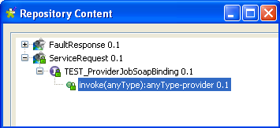

![[Avertissement]](../images/warning.png) | |
Ce composant est adapté pour une utilisation au sein de la version ESB du Studio. Il requiert l'utilisation du nœud du Repository Service et des assistants de création de Services. |
|
Famille de composant |
ESB/Web Services | |
|
Fonction |
Expose un Job Talend comme un Service Web. | |
|
Objectif |
Attend un message de requête d’un consommateur et le passe au composant suivant. | |
|
Basic settings |
Property Type |
Peut être Built-in ou Repository. |
| Built-in : Aucun fichier WSDL n'est configuré pour le Job. Vous devez associer le Job à un Service Web défini dans le nœud Services du Repository. Voir également le Guide utilisateur de Talend Open Studio | ||
| Repository : Sélectionnez le fichier de service Web souhaité depuis le Repository pour sélectionner les paramètres (granularité) du nom du port et de l'opération. | ||
|
Schema et Edit Schema |
Un schéma est une description de lignes, i.e., il définit le nombre de champs qui sont traités et passés au composant suivant. Le schéma est soit local (built-in) soit distant dans le Repository. Cliquez sur Edit Schema pour effectuer des changements sur le schéma. Notez que le schéma devient automatiquement local (Built-in) lorsque vous effectuez des changements. | |
|
|
|
Built-in : Le schéma sera créé et conservé pour ce composant seulement. Voir également le Guide utilisateur de Talend Open Studio. |
|
|
|
Repository : Le schéma existe déjà et est stocké dans le Repository. Ainsi, il peut être réutilisé dans divers projets et Jobs. Voir également le Guide utilisateur de Talend Open Studio. |
|
|
Keep listening |
Cochez cette case lorsque vous souhaitez assurer que le fournisseur (le Job Talend) continue à écouter les requêtes après traitement de la première requête entrante. |
|
Advanced settings |
tStatCatcher Statistics |
Cochez cette case pour collecter les données de log, aussi bien au niveau du Job qu’au niveau de chaque composant. |
|
Utilisation |
Ce composant couvre la possibilité d’exposer un Job Talend en tant que Service, avec la possibilité d’écrire une requête de service dans un Job et retourne le résultat du Job en tant que réponse. Le composant tESBProviderRequest doit être utilisé avec le tESBProviderResponse afin de fournir une réponse à la fin du Job, dans le cas d’une communication de style requête-réponse. | |
|
Limitation |
Une JDK est requise pour que ce composant fonctionne. | |
Les Jobs suivants, construits sur les composants de la famille ESB/Web Service implémentent des services Web définis dans le nœud Services du Repository. Ils requièrent la création et l'association des services correspondants. Pour plus d'informations concernant les services, consultez le Guide utilisateur de Talend ESB Studio (en anglais).
Dans ce scénario, un Job fournisseur et un Job consommateur sont nécessaires. Par ailleurs, le service correspondant doit déjà exister sous le nœud Services, avec l'URI http://127.0.0.1.8088/esb/provider/?WSDL, le port TEST_ProviderJobSoapBinding et l'opération invoke(anyType):anyType
Le Job fournisseur comprend les composants suivants : tESBProvider, tXMLMap et deux tLogRow.
Déposez les composants suivants de la Palette dans l’espace de modélisation graphique : un tESBProviderRequest, un tXMLMap et deux tLogRow.
Double-cliquez sur le composant tESBProvider Request afin d’ouvrir sa vue Basic settings.
Sélectionnez Repository dans la liste Property Type et cliquez sur le bouton [...] afin de choisir le service, la granularité du port et l'opération.
Cliquez sur OK.
Cliquez sur le bouton [...] à côté du champ Edit schema pour voir le schéma du composant tESBProvider Request.
Cliquez sur OK.
Connectez le tESBProviderRequest au composant tLogRow_1.
Double-cliquez sur le tLogRow_1 dans l’espace de modélisation graphique afin d’afficher sa vue Basic settings.

Cliquez sur le bouton [...] à côté du champ Edit schema et configurez le schéma comme suit.
Connectez le tLogRow_1 au tXMLMap.
Reliez le tXMLMap et tLogRow_2 et nommez la connexion payload.
Dans l’espace de modélisation graphique, double-cliquez sur le tXMLMap afin d’ouvrir le Map Editor.
Dans la partie inférieure droite de l’éditeur, cliquez sur le bouton [+] pour ajouter une ligne à la table payload et nommez cette ligne payload.
Dans la colonne Type de cette ligne payload, sélectionnez le type de données Document. La racine XML correspondante est ajoutée automatiquement à la table supérieure de droite, représentant le flux de sortie.
Dans la table payload, cliquez-droit sur root pour ouvrir son menu contextuel.
Dans le menu contextuel, sélectionnez Create Sub-Element et saisissez response dans la boîte de dialogue.
Cliquez-droit sur le nœud response et sélectionnez As loop element dans le menu contextuel.
Répétez l’opération pour créer un sous-élément request du noeud root dans la table d’entrée et définissez le nœud request comme élément de boucle.
Cliquez sur le nœud request dans la table d’entrée et déposez-le dans la colonne Expression de la ligne du nœud response de la table de sortie.
Cliquez sur OK pour valider le mapping et fermer l’éditeur.
Double-cliquez sur le tLogRow_2 dans l’espace de modélisation graphique afin d’afficher sa vue Basic settings.
Cliquez sur le bouton [...] à côté du champ Edit schema et configurez le schéma comme suit.
Sauvegardez le Job.
Le Job consommateur comprend un tFixedFlowInput, un tXMLMap, un tESBConsumer et deux tLogRow.
Déposez les composants suivants de la Palette dans l’espace de modélisation graphique : un tFixedFlowInput, un tXMLMap, un tESBConsumer et deux tLogRow.
Double-cliquez sur le tFixedFlowInput afin d’afficher sa vue Basic settings.
Configurez le schéma du composant tFixedFlowInput.
Cliquez sur le bouton [+] pour ajouter une ligne de type String et nommez-la payloadString.
Cliquez sur OK.
Dans le champ Number of rows, configurez le nombre de lignes à 1.
Dans la zone Mode, sélectionnez Use Single Table et saisissez
worldentre guillemets, dans le champ Value.Connectez le tFixedFlowInput au tXMLMap.
Reliez le tXMLMap au tESBConsumer et nommez la connexion payload.
Dans l’espace de modélisation graphique, double-cliquez sur le tXMLMap pour ouvrir le Map Editor.
Dans la table de sortie, cliquez-droit sur root pour ouvrir son menu contextuel.
Dans le menu contextuel, sélectionnez Create Sub-Element et saisissez request dans la boîte de dialogue.
Cliquez-droit sur le nœud request et sélectionnez As loop element dans le menu contextuel.
Cliquez sur le nœud payloadstring dans la table d’entrée et déposez-le dans la colonne Expression dans la ligne du nœud request de la table de sortie.
Cliquez sur OK pour valider le mapping et fermer l’éditeur.
Démarrez le Job fournisseur. Dans le log d’exécution, vous pouvez voir :
... web service [endpoint: http://127.0.0.1:8088/esb/provider] published ...
Dans la vue Component du tESBConsumer, configurez ses propriétés.
Cliquez sur le bouton [...] à côté du champ Service Configuration afin d’ouvrir l’éditeur.
Dans le champ WSDL, saisissez : http://127.0.0.1:8088/esb/provider?WSDL
Cliquez sur le bouton Refresh afin de récupérer le nom du port et de l’opération..
Cliquez sur OK.
Configurez le schéma d’entrée (Input Schema) du composant tESBConsumer comme suit.
Configurez le schéma de réponse (Response Schema) comme suit.
Configurez le schéma Fault comme suit.
Connectez le composant tESBConsumer au tLogRow_1 et au tLogRow_2.
Dans l’espace de modélisation graphique, double-cliquez sur le tLogRow_1 afin d’afficher sa vue Basic settings.
Cliquez sur le bouton à côté du champ Edit schema et configurez le schéma comme suit.
Dans l’espace de modélisation graphique, double-cliquez sur tLogRow_2 afin d’afficher sa vue Basic settings.
Cliquez sur le bouton [...] à côté du champ Edit schema et configurez le schéma comme suit.
Sauvegardez le Job.
Exécutez le Job fournisseur. Vous pouvez voir dans le log d’exécution :
INFO: Setting the server's publish address to be http://127.0.0.1:8088/esb/provider
2011-04-21 14:14:36.793:INFO::jetty-7.2.2.v20101205
2011-04-21 14:14:37.856:INFO::Started
SelectChannelConnector@127.0.0.1:8088
web service [endpoint: http://127.0.0.1:8088/esb/provider] published
Exécutez le Job consommateur. Vous pouvez voir dans le log d’exécution du Job :
Starting job CallProvider at 14:15 21/04/2011. [statistics] connecting to socket on port 3942 [statistics] connected TEST_ESBProvider2 TEST_ESBProvider2SoapBingding | [tLogRow_2] payloadString: <request>world</request> {http://talend.org/esb/service/job}TEST_ESBProvider2 {http://talend.org/esb/service/job}TEST_ESBProvider2SoapBinding invoke [tLogRow_1] payload: null [statistics] disconnected Job CallProvider2 ended at 14:16 21/04/2011. [exit code=0]Dans le log du fournisseur vous pouvez voir le log des traces :
web service [endpoint: http://127.0.0.1:8088/esb/provider] published [tLogRow_1] payload: <?xml version="1.0" encoding="UTF-8"?> <request>world</request> ### world [tLogRow_2] content: world [tLogRow_3] payload: <?xml version="1.0" encoding="UTF-8"?> <response xmlns="http://talend.org/esb/service/job">Hello, world!</response> web service [endpoint: http://127.0.0.1:8088/esb/provider] unpublished [statistics] disconnected Job ESBProvider2 ended at 14:16 21/04/2011. [exit code=0]